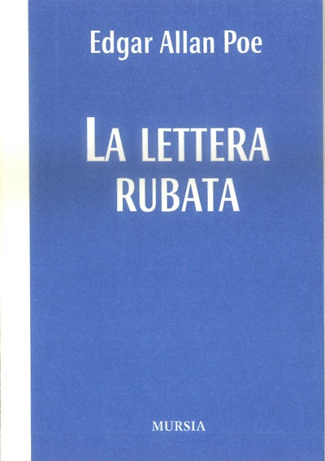
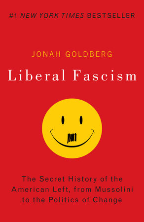
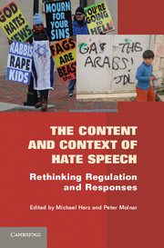

39:53 · 8 OPERE
Come rispondere alla censura del pensiero nella nostra epoca?
Il filo del discorso
Il relatore prende spunto da un breve video di Claudia Bianchi sul discorso d’odio e dalla mancata visibilità di un proprio commento per interrogare il rapporto fra libertà di parola, critica e censura. La lettera rubata di Poe introduce il motivo di ciò che può restare nascosto pur essendo in vista.
Leggi la sintesi completaRiduci la sintesi
Il contributo contesta l’idea che la validità di un discorso dipenda dalla piattaforma su cui appare e sostiene la necessità di tornare a testi, definizioni e contesti verificabili. Nella parte centrale viene letta una definizione di Bhikhu Parekh e si distingue l’incitamento all’odio dal semplice disagio emotivo o dalla satira, con una polemica verso l’industria culturale e accademica che la scheda mantiene attribuita. Il relatore collega inoltre la rinuncia allo sforzo intellettuale alla comodità tecnica e raccomanda il confronto con punti di vista contrari. Gli esempi spaziano dai falsi antisemiti alle regole di una libreria di Evanston, da Liberal Fascism di Jonah Goldberg alle Nuvole di Aristofane. La chiusura richiama Kant per chiedere chiarezza concettuale. Il racconto non consente però di certificare un intervento censorio, il suo responsabile o le intenzioni della docente; la distinzione fra offesa, discriminazione, satira e illecito richiede una valutazione del contesto e non una definizione unica valida per ogni ordinamento.
I libri nel discorso

La lettera rubata
Note sul riferimento
Copertina: Mursia · I Picci one · edizione del singolo racconto
Immagine autentica dell’opera, controllata visivamente; non identifica l’edizione usata nel video.
Edgar Allan Poe e La lettera rubata espliciti; motivo del nascondere in piena vista.

Liberal Fascism. The Secret History of the American Left, from Mussolini to the Politics of Change
Note sul riferimento
Copertina: Forum Books, paperback del 2 giugno 2009, 512 pagine, ISBN 9780767917186. Opera uscita originariamente nel 2008; il sottotitolo di questa edizione statunitense va distinto dalla variante britannica Politics of Meaning.
Copertina autentica dell’editore, vista integralmente: fondo rosso, Jonah Goldberg, titolo Liberal Fascism e faccina gialla con baffetto. È il motivo grafico descritto dal relatore, senza certificare la specifica tiratura del suo esemplare. La tesi politica del libro non viene presentata come un consenso storiografico né come prova di equivalenza fra ogni liberalismo e il fascismo.
Titolo inglese e faccina sorridente con baffetto in copertina espliciti; autore riscontrato presso l’editore.

I Protocolli dei savi di Sion (falso antisemita)
Note sul riferimento
Copertina storica di un falso antisemita: The Jewish Peril · Londra, Eyre & Spottiswoode · 1920
Fotografia museale della copertina dell’edizione inglese del 1920, conservata dall’USHMM. È mostrata come documento storico di propaganda, senza attribuire questa edizione al video o avallare le sue falsificazioni.
I Protocolli sono nominati come costruzione immaginaria antisemita usata contro persone reali.

Is There a Case for Banning Hate Speech?
Note sul riferimento
Volume collettivo: The Content and Context of Hate Speech: Capitolo 2 in The Content and Context of Hate Speech: Rethinking Regulation and Responses, a cura di Michael Herz e Peter Molnar, Cambridge University Press, 2012, pp. 37–56. Copertina del volume collettivo, ISBN 9780521191098; questo ISBN non identifica un libro autonomo di Parekh.
Copertina autentica della raccolta Cambridge: titolo, sottotitolo, curatori Michael Herz e Peter Molnar, marchio Cambridge e collage di cartelli di odio. L’autore del singolo capitolo è Bhikhu Parekh, non autore dell’intero volume.
Parekh, definizione tradotta, raccolta Cambridge 2012 espliciti; riscontro del capitolo 2 e della definizione a p 40.

L’uomo a una dimensione
Identificazione probabile
Note sul riferimento
Copertina: Einaudi, Piccola Biblioteca Einaudi, 1999
Copertina di un’edizione bibliografica dell’opera, con introduzione di Luciano Gallino. La citazione nel video resta probabile; questa edizione non vi è confermata.
Marcuse e discorso monodimensionale: collegamento probabile al libro, titolo completo non pronunciato.

Le nuvole
Note sul riferimento
Copertina: BUR, Classici greci e latini, 2001, a cura di Alessandro Grilli, testo greco a fronte, ISBN 9788817173360. Il catalogo editoriale corrente indica 272 pagine; non si attribuisce automaticamente la stessa paginazione a ogni ristampa.
Copertina autentica Rizzoli / BUR: Aristofane, Le nuvole, cura di Alessandro Grilli, testo greco a fronte e figure tratte da iconografia vascolare. Edizione di riferimento, non certificata nel filmato. La prima rappresentazione è del 423 a.C.; il testo conservato comprende una successiva rielaborazione.
Le nuvole di Aristofane esplicite nel racconto sulla reazione di Socrate alla commedia.

What Is a Woman?
Note sul riferimento
Immagine ufficiale del documentario, 2022: Immagine promozionale del documentario statunitense del 2022, regia Justin Folk, presentato da Matt Walsh, The Daily Wire. Fornita nella pagina ufficiale del produttore; nessun ISBN librario.
Fotografia promozionale ufficiale con Matt Walsh, occhiali e barba, in ambiente urbano. Non è la copertina di un libro, né una prova dell’integralità o neutralità delle interviste montate nel film. Il titolo individua un documentario politico con una propria impostazione editoriale, distinto dalle audizioni del Senato citate separatamente.
Documentario What Is a Woman? esplicito; non confuso con un libro di Matt Walsh.

Critica della ragione pura
Note sul riferimento
Copertina: Adelphi · Gli Adelphi 85, 1995 · traduzione e cura Giorgio Colli
Immagine autentica dell’opera, controllata visivamente; l’edizione di riferimento non è attribuita al filmato.
Formula sui pensieri senza contenuto e sulle intuizioni senza concetti, riconoscibile in A 51/B 75.